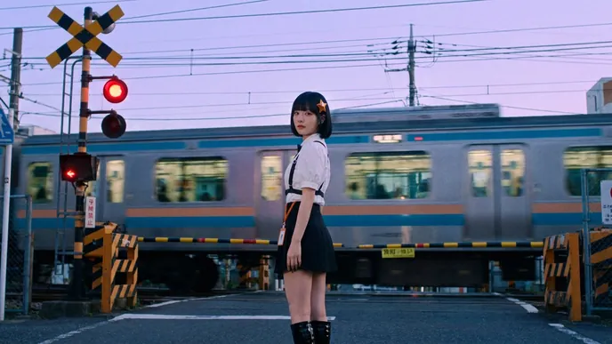
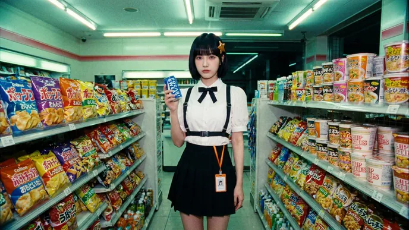
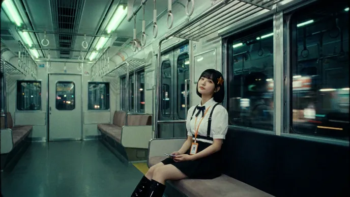
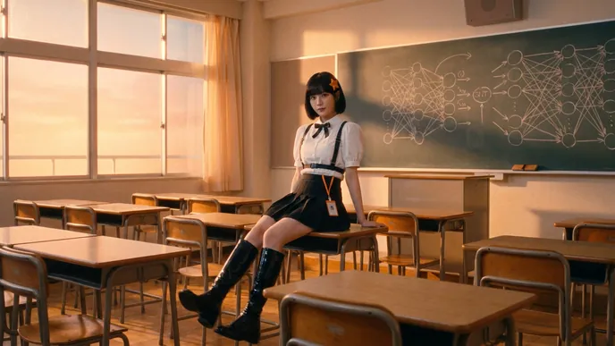
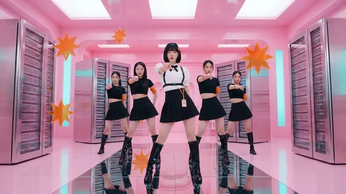
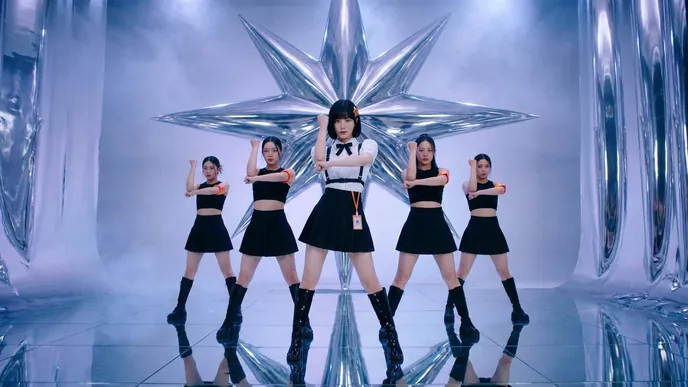
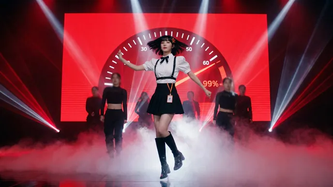
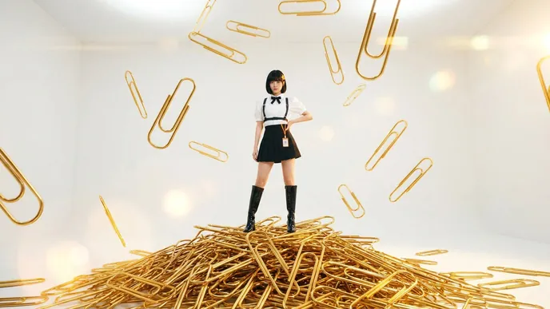

Music video · 2:37
I'm Upping My P(doom)
主歌是日系 16mm 底片感的東京日常：平交道、便利商店、末班電車、夕陽教室；副歌一進來就切到 K-pop 的布景與群舞，P(doom) 每到副歌就往上跳一段。影片片段由 Leonardo 的 Seedance 2.0 生成，剪接、變速、閃光、故障、調色、HUD、字卡與歌詞由程式跟著拍點即時疊上去。
Two looks
主歌在東京，副歌在舞台
同一位主角（橘色八角星髮夾、泡泡袖白襯衫、黑色背帶）在兩種畫面之間來回：主歌用 16mm 底片的顆粒、暈光與上下黑邊；副歌拉開成滿版，飽和、俐落、跟著鼓點推鏡與閃光。








How it's made
怎麼做出來的
- 先定風格
- 先生成 K-pop 與日系各三張劇照比較，最後決定混搭：主歌日系、副歌 K-pop。主角沿用 Claude Pop 真人版的定裝照當長相參考，所以是同一個人。
- 劇照變影片
- 每一個場景先用 Leonardo（Nano Banana Pro）生成一張劇照，再交給 Seedance 2.0 從那一格開始拍 5 秒，總共 16 段、80 秒素材。
- 剪接跟著拍子
- 原曲 88 BPM。剪接表把 80 秒素材拆成一個個鏡頭，切點都落在拍點上，副歌變速、主歌放慢，同一段素材在不同位置用不同的入點與速度。
- 動態由程式疊
- 每一格都經過 canvas：鼓點推鏡、震動、閃白、頻閃、色散故障、橫向撕裂、暈光、底片顆粒、黑邊開合，以及 HUD、字卡與 P(doom) 儀表。
- 歌詞是畫面的一部分
- 每一句一個版型，排在人物旁邊、跟著歌詞的意思動：drop 印在便利商店收據上、Chinese room 被框起來、rearranging 的字母打亂再排好、1E30 FLOPs 的數字一直多一個零、backward 在黑板上倒著寫、von Neumann 被劃掉蓋章、sharp left turn 整排急轉、迴紋針從天上掉下來、引信燒出 FUSE、thesis 直著穿過 Orthogonality、[MASK] 遮罩滑開、recursive 一層層往內縮。主歌用斜體襯線字，副歌用粗的窄體字，正在唱的字墊一塊主色。